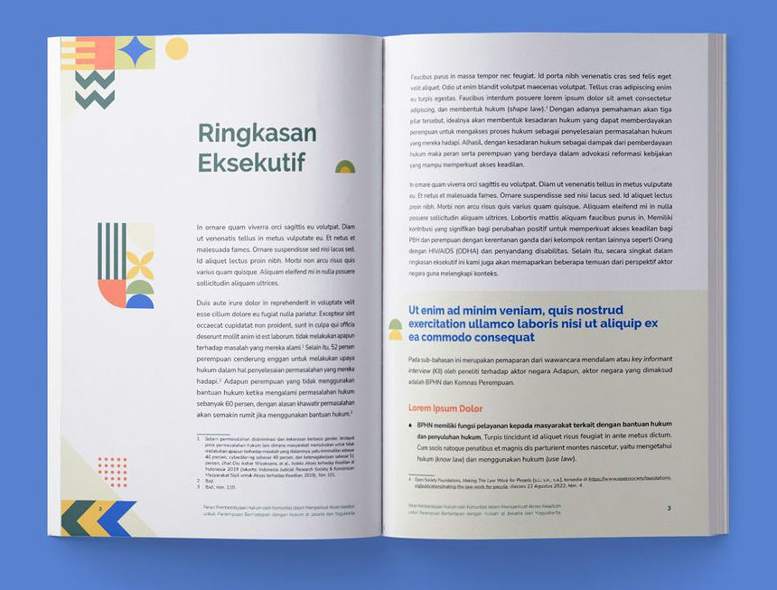
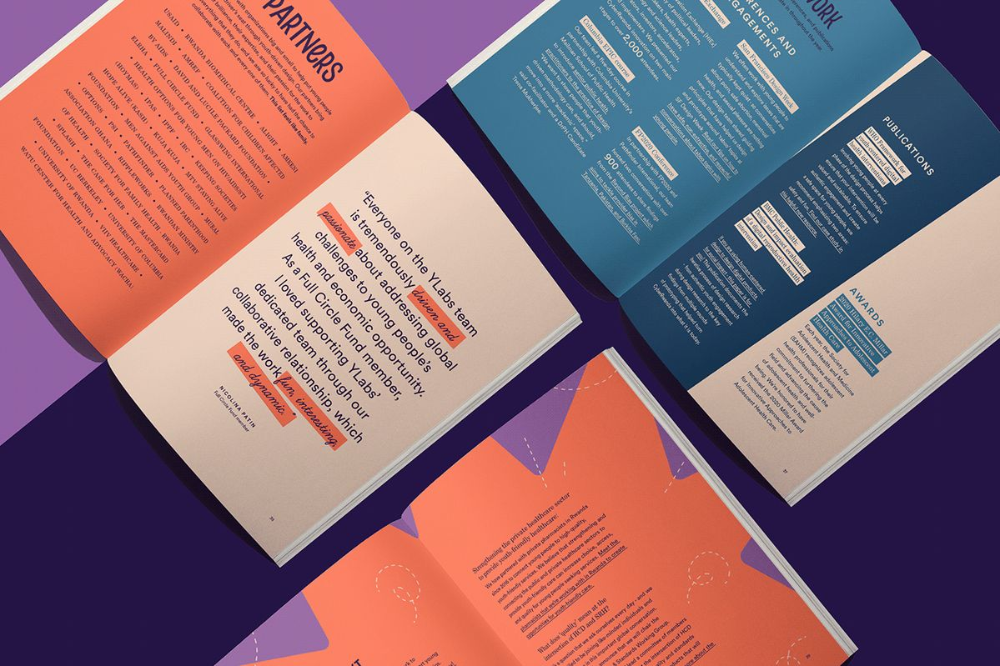
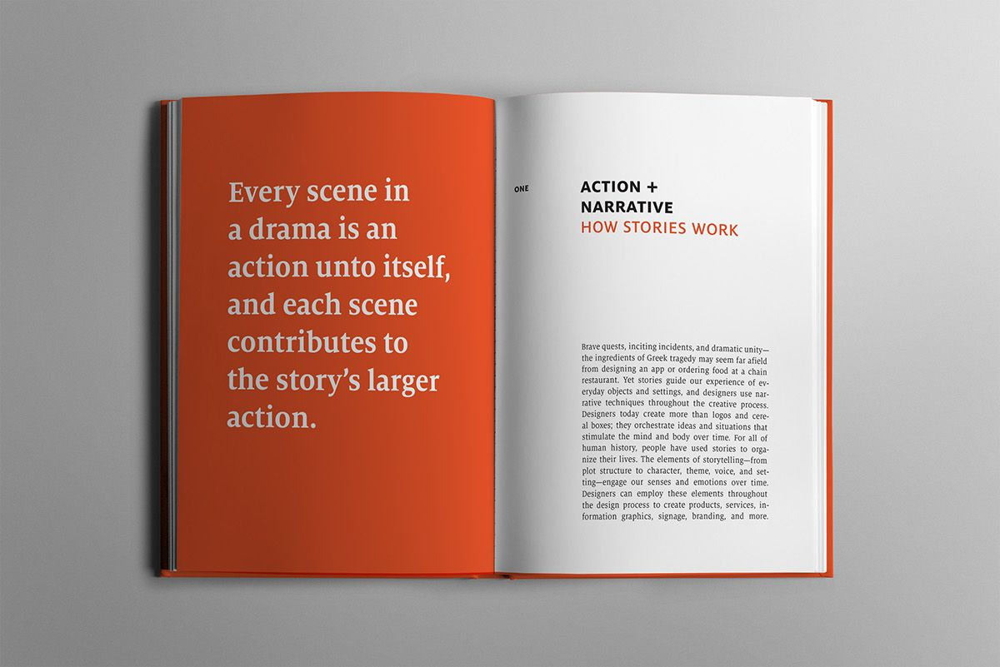
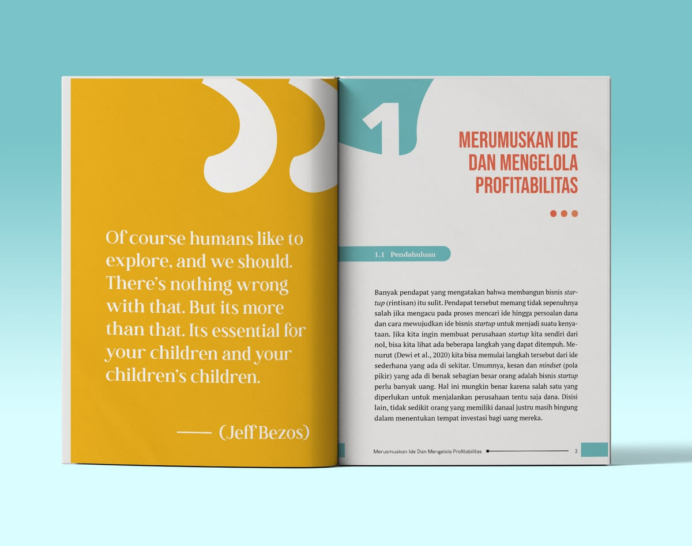

Livro comemorativo de 15 anos do ICFML. Produção editorial e diagramação completa.
Uma narrativa extensa.
Um único sistema editorial.
A grelha combina diferentes ritmos de leitura. O sistema visual conecta cada página ao todo sem retirar a personalidade de cada capítulo.
Uma publicação para organizar a memória institucional e fazê-la permanecer.
Volume previsto para a versão final, incluindo índice e elementos de abertura.
Aberturas, entrevistas, linhas do tempo, testemunhos, colagens e acervo.
Uma estrutura ampla, desenhada para orientar a leitura do início ao fim.
O mockup orienta.
O sistema sustenta.
Seguimos fielmente a direção visual aprovada e construímos uma base de produção capaz de manter qualidade, hierarquia e ritmo ao longo das 65 duplas.
- Grid, páginas-mestre e estilos consistentes
- Ritmo entre memória, entrevista e cronologia
- Respiro, hierarquia e leitura confortável
- Paleta do ICFML como código de orientação




Da grelha editorial
ao arquivo final.
Produção e diagramação do livro dos 15 anos do ICFML, em formato A4, com até 130 páginas (65 duplas) e seguindo o mockup aprovado.
Textos finais, fotografias identificadas e autorizações de uso são fornecidos pelo ICFML em lotes organizados.
O que está incluso
- Diagramação A4 de até 130 páginas / 65 duplas
- Arquivo-mestre em Adobe InDesign
- Grid, páginas-mestre e estilos tipográficos
- Inserção de textos, entrevistas e fotografias
- Aberturas, linhas do tempo, testemunhos e colagens
- Ajustes básicos de enquadramento e uniformização
- Paginação, índice e conferência geral
- 2 rodadas consolidadas de ajustes
Investimento e condições.
ICFML · 15 anos
- Produção editorial e diagramação completa
- Sistema de páginas seguindo o mockup aprovado
- 2 rodadas consolidadas de ajustes
- PDF final para impressão e versão digital
- Arquivo InDesign editável e pacote de vínculos
- Prazo estimado de 8 a 10 semanas
marcos do projeto
Quatro fases,
com aprovações por marcos.
Preparação
editorial
Recebimento do mockup e do primeiro lote, organização dos materiais e configuração do arquivo.
Sistema
de páginas
Grid, páginas-mestre, estilos e modelos de composição validados antes da produção em escala.
Produção
Diagramação progressiva por capítulos, acompanhando a entrega de textos, entrevistas e fotografias.
Revisão
e entrega
Versão completa, duas rodadas consolidadas, índice, preflight, PDF e pacote editável.
Clareza agora.
Tranquilidade durante a produção.
A contagem começa após a contratação e o recebimento do primeiro lote completo. O cronograma pausa enquanto aguardamos conteúdos, imagens ou feedback consolidado do ICFML. Necessidades fora desta base podem ser avaliadas e aprovadas separadamente.
Quinze anos de memória,
transformados em presença e legado.
Precisão editorial e cuidado visual para que a história do ICFML seja lida com clareza, reconhecida com emoção e preservada em uma publicação à altura da sua trajetória.